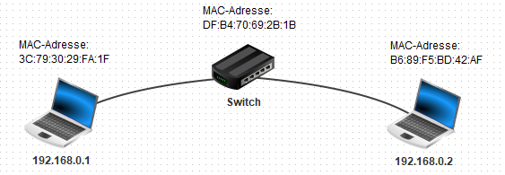

Der Rechner 192.168.0.1 sendet ein ping an 192.168.0.2. Beide kennen sich noch nicht.
Eine Datei von 3 MiB wird per TCP/IP über ein 100-Mbit/s-Ethernet übertragen. Jeder Frame enthält ein IP-Paket von höchstens 1 500 Byte, davon sind 20 Byte IP-Header und 20 Byte TCP-Header. Präambel und Sendepausen zwischen den Frames werden vernachlässigt.
3 MiB = 3 · 1 048 576 Byte. Nutze den Aufbau des Ethernet-Frames aus der Tabelle oben.
Switch S1 hat an Port 1 den Rechner A, an Port 2 den Rechner B und an Port 3 eine Leitung zu Switch S2. An S2 hängt diese Leitung an Port 1, an Port 2 der Rechner C und an Port 3 der Rechner D. Beide SATs sind leer. Nacheinander werden die Frames A → D, D → A, C → B und B → C gesendet.